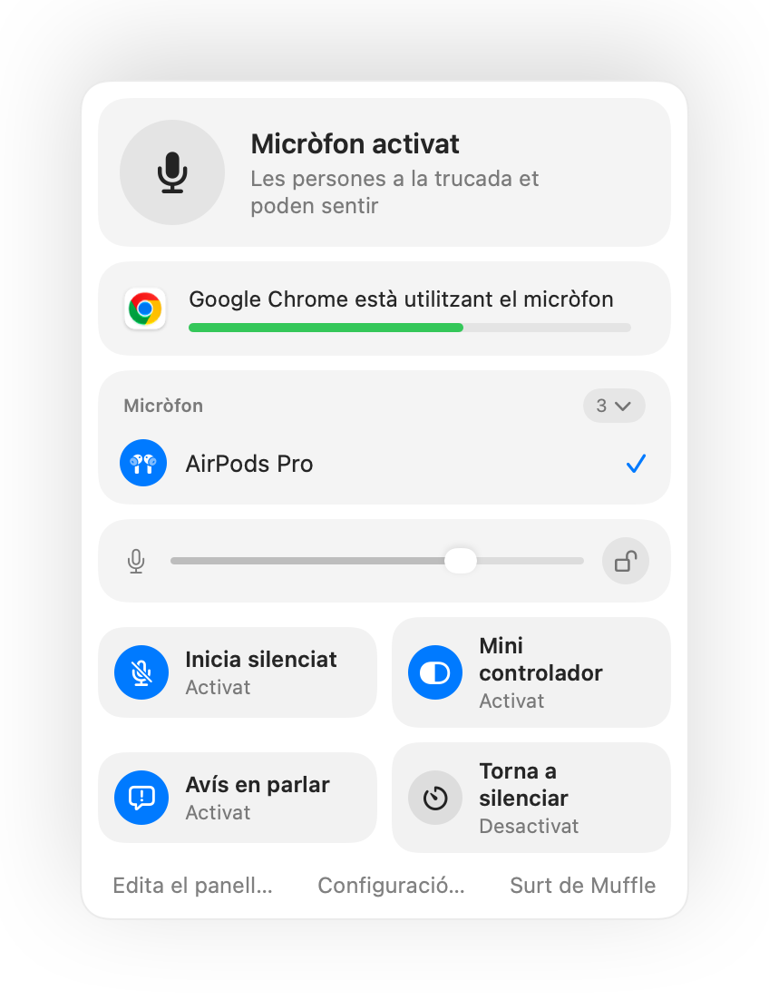

Com silenciar el micròfon al Mac
Al Mac no hi ha cap tecla per silenciar el micròfon. Segons l'app i la situació tens diverses opcions, però només algunes funcionen a tot arreu.
Prova Muffle gratis durant 3 diesProperament a la Mac App Store
Les teves opcions
- El botó o la drecera de la mateixa app de trucades. Només funciona en aquesta app i només mentre la tinguis en primer pla.
- Configuració del sistema, So, Entrada. Arrossegar el nivell d'entrada a zero no és un silenciament real en tots els micròfons, i les apps poden tornar a apujar-lo.
- Una drecera global amb Muffle. Una sola tecla silencia el mateix micròfon a totes les apps.
- Els teus AirPods. Amb Muffle, prémer la vareta silencia qualsevol trucada, inclòs Google Meet a Chrome.

- La icona de Muffle a la barra de menús es posa vermella quan el micròfon està desactivat, independentment de l'app on siguis.
- Sortir de Muffle sempre torna a activar el micròfon.
Preguntes
Hi ha una opció integrada al Mac per silenciar el micròfon?
No per a tot el sistema. macOS només permet silenciar el micròfon dins de les apps que ho admeten. Muffle afegeix un silenciament real a tot el sistema.
Silenciar des de Muffle silencia totes les apps?
Sí. Muffle desactiva tots els micròfons a nivell de maquinari perquè ningú a la trucada et pugui sentir fins que activis el so.